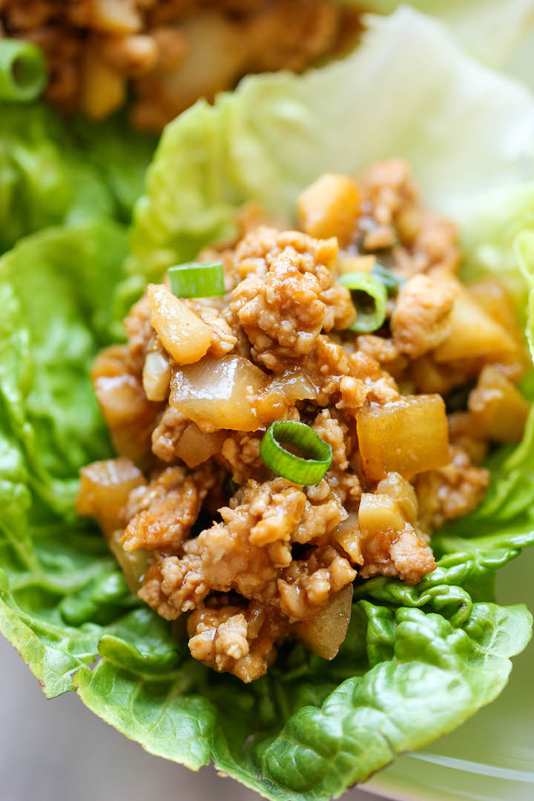

Lettuce Wrap Recipe

Chicken Lettuce Wraps
I am such a sucker for lettuce wraps. They are so low in carbs so I become a bottomless pit, stuffing my face without any kind of guilt. And when it’s an exact PF Chang’s replica that can be made in 20 minutes or less – well, that just means I’m having this 5 times a week.
Ingredients
- 1 tablespoon olive oil
- 1 pound ground chicken
- 2 cloves minced garlic
- 1 onion diced
- 1/4 cup hoisin sauce
- 2 tablespoons soy sauce
- 1 tablespoon rice wine vinegar
- 1 tablespoon freshly grated ginger
- 1 table spoon sriracha
- 1 8oz can whole water chestnuts drained and diced
- 2 green onions thinly sliced
- Salt and pepper to taste
- 1-2 heads butter lettuce
Steps
- Heat olive oil in a saucepan over medium high heat. Add ground chicken and cook until browned, about 3-5 minutes, making sure to crumble the chicken as it cooks; drain excess fat.
- Stir in garlic, onion, hoisin sauce, soy sauce, rice wine vinegar, ginger and Sriracha until onions have become translucent, about 1-2 minutes.
- Stir in chestnuts and green onions until tender, about 1-2 minutes; season with salt and pepper, to taste.
- To serve, spoon several tablespoons of the chicken mixture into the center of a lettuce leaf, taco-style.